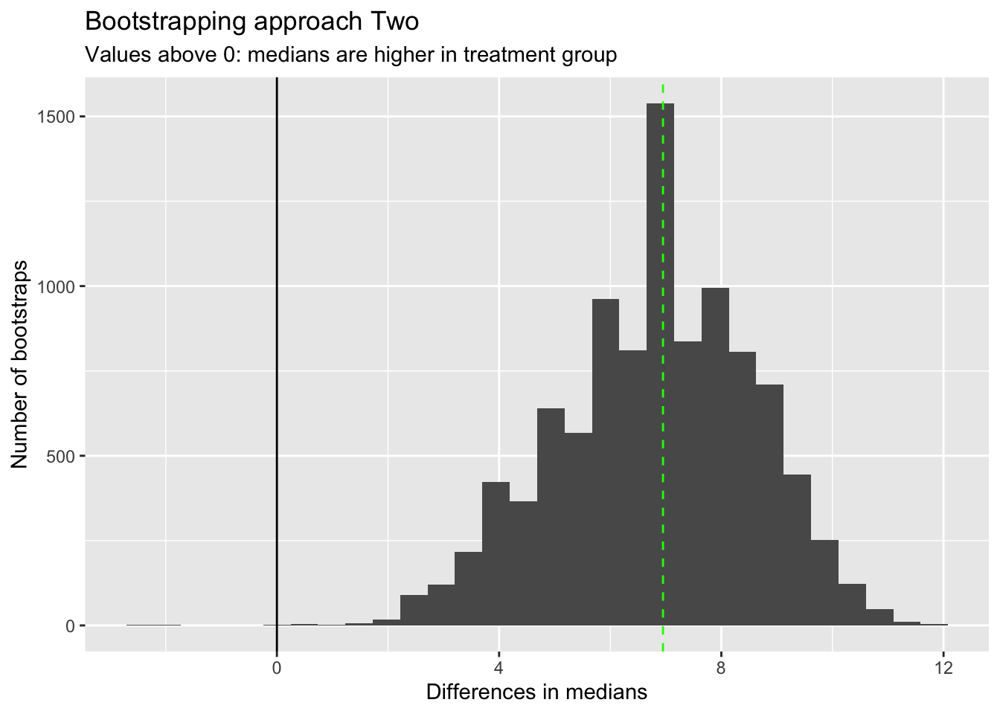

flowchart TB
sd[Sample Data]
us(Uniform Sampling)
nus(Non-Uniform Sampling)
pt[Permutation Testing]
bs[Bootstrapping]
ps[Post-Stratification]
pw[Population Weights]
dec1{Equal Probability?}
dec2{With Replacement?}
sd --sampling--> dec1
us --> dec2
dec1 --Yes--> us
dec1 --No--> nus
nus --> ps
dec2 --Yes--> bs
dec2 --No--> pt
pw --> nus
Hacker Stats
Overview
Introduction
This page discusses resampling approaches to statistical inference. Resampling approaches are a powerful and highly adaptable set of approaches for trying to get ‘good enough’ estimates of how statistically significant some observed value or summary of observed values is likely to be, or equivalently how likely what one’s observed is to have been observed by chance. They can also be extended and applied to performing post-stratification, which allows samples of the population with known biases to be adjusted in ways that aim to mitigate such biases, and so produce summary estimates more representative of the population of interest.
Resampling as Hacker Stats
Resampling methods are sometimes called Hacker Stats, which might be a slightly derogatory term, but is also an informative one. Broadly, Resampling Methods:
- Substitute meat brain effort (deriving and recalling analytic solutions) for silicon brain effort (i.e. they’re computationally intensive rather than human knowledge and reasoning intensive).
- Are theoretically and methodologically thin rather than theoretically and methodologically fat.
- Are approximate, stochastic and general; rather than precise, deterministic and specialist.
Put another way, Hacker Stats are methods that data scientists and more casual users of statistics can use to get good enough approximations of the kinds of careful, analytic solutions and tests that, with many years of specialist training and memorisation, a degree in statistics would provide. They’re a good example of the 80:20 Principle: part of the 20% of stats know-how that’s used for 80% of the tasks.
Types of permutation method
The following flowchart shows the ‘family tree’ of types of resampling method:
n.b. Bootstrapping and permutation testing can be applied to post-stratified data too!
The thin-but-deep theories
Both Bootstrapping, which is resampling with replacement, and Permutation Testing, which is resampling without replacement, use computation to explore the implications of two distinct, simple, and important theories about the sample data, and any observations we may think we’ve observed within it. Let’s try to talk through these two thin-but-deep theories:
Bootstrapping
Definition and history
According to Wikipedia:
Bootstrapping is any test or metric that uses random sampling with replacement (e.g. mimicking the sampling process), and falls under the broader class of resampling methods. Bootstrapping assigns measures of accuracy (bias, variance, confidence intervals, prediction error, etc.) to sample estimates.[1][2] This technique allows estimation of the sampling distribution of almost any statistic using random sampling methods.[3][4]
Bootstrapping estimates the properties of an estimand (such as its variance) by measuring those properties when sampling from an approximating distribution. One standard choice for an approximating distribution is the empirical distribution function of the observed data. In the case where a set of observations can be assumed to be from an independent and identically distributed population, this can be implemented by constructing a number of resamples with replacement, of the observed data set (and of equal size to the observed data set).
It may also be used for constructing hypothesis tests.[5] It is often used as an alternative to statistical inference based on the assumption of a parametric model when that assumption is in doubt, or where parametric inference is impossible or requires complicated formulas for the calculation of standard errors.
n.b. The same page (In History) also states: “Other names … suggested for the ‘bootstrap’ method were: Swiss Army Knife, Meat Axe, Swan-Dive, Jack-Rabbit, and Shotgun.” So, there might not be good reasons to fear statistics, but given this list of suggestions there might be good reasons to fear some statisticians! Of these alternative names, perhaps Swiss Army Knife is the most appropriate, as it’s a very widely applicable approach!
The key assumption of Bootstrapping
Bootstrapping starts and ends with something like the following assumption:
Every observation in our dataset is equally likely.
Why is this?
Because each specific observation in our dataset has been observed the same number of times.
Why do you say that?
Because each observation in the dataset has been observed exactly one time, and
1=1!
And why does this matter?
Because, if we can accept the above, we can say that another dataset, made up by resampling the real sample data, so that each observation (row) is as likely to be picked as every other one, is as likely as the dataset we actually observed. And so long as this other dataset has the same number of observations as the original dataset, then it’s also as precise as the original dataset.
It’s this line of reasoning - and the two conditions for another dataset: equally likely; and equally precise - which lead to the justification, in bootstrapping, for resampling with replacement.
Permutation Tests
Here’s a more informal description of what permutation tests do, followed by a slightly more formal coverage of the same.
Informal Explanation
Let’s try to understand the intuition of permutation tests using a (rather boring) story:
- Imagine you have two types of index cards: red cards and blue cards.
- Say there are 12 red cards and 8 blue cards, so a total of 20 cards.
- On each of the cards is a value. Let’s say it’s a binary value:
1(maybe for a ‘success’) or0(a ‘failure’). - Let’s say the values from the red card came from flipping a specific coin, Coin A, 12 times, and writing a
1on a blank red index card if the coin came up heads, and0on a blank red index card if the coin came up tails. - The values on the blue cards came from flipping a different coin, Coin B, 8 times, and doing the same thing, but with blue cards instead of red cards.
What you want to know is whether Coin A or Coin B are different, i.e. one has a different probability of producing heads than the other one. However, you don’t have access either Coin A or Coin B. The only information you have to go on is the 20 index cards: 12 red, 8 blue.
How do you go about determining if the two coins are different, when you don’t have access to either coin, and all you have are the 20 index cards?
One approach is to perform permutation tests. This is a way of using computation to produce a Null Distribution, meaning a distribution of some kind of summary statistic that you would expect to observe if there were really no difference between Coin A and Coin B. This Null Distribution is a distribution of summary values that you would expect to observe if the Null Hypothesis were true, where the Null Hypothesis is that Coin A and Coin B behave in exactly the same way. You then compare the corresponding summary statistic from the observed data against this Null Distribution. If the observed summary statistic is far from the range of summary statistics, then you have more reason to Reject the Null Hypothesis, which generally corresponds to evidence for the Alternative Hypothesis, which in this case is that Coin A and Coin B are different.
The way you would manually perform a permutation test (without computers) in this example is as follows:
- You get a big box of only red index cards, and a big box of blue index cards, all of which are blank.
- From the big box of red index cards, you take 12 cards, and put them into a little pile.
- From the big box of blue index cards, you take 8 cards, and put them into the same pile containing the 12 red index cards.
- You then randomly shuffle the 20 cards with values written on them (your data), and place this randomly shuffled pile face down.
- You take the top card from the data pile, turn it over, and write its value on the first card in the small pile of 20 blank cards you’ve just made. You then take this now-not-blank card from the small pile, and place it next to the pile of now 19 blank cards.
- You then repeat with the next card in the data pile, and the next card in the small blank card pile, until all cards in the blank card pile have had a value (
1or0) written onto them. - You then repeat steps 2 through 6 a large number of times: say another 999 times. At the end of this, you now have one real dataset, comprising 20 index cards - 12 red, 8 blue - and 1000 ‘fake datasets’, i.e. 1000 piles of 20 index cards each - 12 red, 8 blue - which also each have
1or0written on them. - After you have done this, you calculate a summary statistic for both the one real dataset, and the 1000 ‘fake datasets’. Say this is the difference in the proportions of
1in the red subset of cards, and the blue subset in cards. You calculate this for the real dataset, and call it the observed statistic. And you also calculate it for each of the 1000 fake datasets, which provides your Null distribution for this same statistic. - Finally, you compare the observed statistic (from the real dataset), with the Null distribution of summary statistics. If the observed statistic is somewhere in the middle of the Null distribution, there’s little reason to reject the Null Hypothesis; if it’s quite far from the Null distribution, there’s much more reason to reject the Null Hypothesis.
As you can tell from the description above, this would be quite a slow approach to making a Null distribution if we were to follow the steps manually. This is why historically many of the approaches for producing Null distributions that you might be familiar with involve algebra-based theoretical distributions. In the example above a classic way of calculating the Null distribution would be using the Chi-Squared distribution. Historically, it was much quicker for one person to figure out the algebra once, and perform calculation based on the algebraic solution, than to perform a permutation test. These days, even if we have an algebraic solution, it can still be as quick or quicker to perform a permutation test.
Formal Explanation
Say we have a sample dataset, \(D\), which is a big rectangle of data with rows (observations) and columns (variables). To simplify, imagine \(D\) comprises five observations and two variables, so it looks like this:
\[ D = \begin{pmatrix} d_{1,1} & d_{1,2} \\ d_{2,1} & d_{2,2} \\ d_{3,1} & d_{3,2} \\ d_{4,1} & d_{4,2} \\ d_{5,1} & d_{5,2} \end{pmatrix} \]
There are a number of different ways of describing and thinking about this kind of data, which is really just a structured collection of elements. One approach is to think about from the perspective of observations, which leads to a row-wise interpretation of the dataset:
\[ D = \begin{pmatrix} d_{1} = \{d_{1,1} , d_{1,2}\} \\ d_{2} = \{d_{2,1} , d_{2,2}\} \\ d_{3} = \{d_{3,1} , d_{3,2}\} \\ d_{4} = \{d_{4,1} , d_{4,2}\} \\ d_{5} = \{d_{5,1} , d_{5,2}\} \end{pmatrix} \]
And another way of thinking about the data is from the perspective of variables, which leads to a column-wise interpretation of the data:
\[ D = \{X, Y\} \]
\[ X = \{d_{1,1}, d_{2,1}, d_{3, 1}, d_{4, 1}, d_{5, 1}\} \]
\[ Y = \{d_{1,2}, d_{2,2}, d_{3, 2}, d_{4, 2}, d_{5, 2}\} \]
Now, imagine we’ve looked at our dataset, and we think there’s an association between the two variables \(X\) and \(Y\). What would be a very generalisable way of testing for whether we’re correct in assuming this association?
The key piece of reasoning behind resampling without replacement for permutation testing is as follows:
If there is a real association between the variables then the way values are paired up as observations matters, and should be preserved. If there’s no real association between the variables then the pairing up of values into observations doesn’t matter, so we can break this pairing and still get outcomes similar to what we actually observed.
There’s another term for resampling with replacement: shuffling. We can break-up the observational pairing seen in the dataset by shuffling one or both of the variables, then putting back the data into the same kind of rectangular structure it was before.
For instance, say we shuffle variable \(Y\), and end up with the following new vector of observations:
\[ Y^{shuffled} = \{ d_{2,2}, d_{5, 2}, d_{3, 2}, d_{1,2}, d_{4, 2} \} \]
We could then make a new fake dataset, with all the same values as in the original dataset, but not necessarily in the same order:
\[ X = \{d_{1,1}, d_{2,1}, d_{3, 1}, d_{4, 1}, d_{5, 1}\} \]
\[ Y^{shuffled} = \{d_{4,2}, d_{2,2}, d_{1, 2}, d_{3, 2}, d_{5, 2}\} \]
\[ D^{fake} = \{X, Y^{shuffled}\} \]
\[ D^{fake} = \begin{pmatrix} d_{1}^{fake} = \{d_{1,1} , d_{4,2}\} \\ d_{2}^{fake} = \{d_{2,1} , d_{2,2}\} \\ d_{3}^{fake} = \{d_{3,1} , d_{1,2}\} \\ d_{4}^{fake} = \{d_{4,1} , d_{3,2}\} \\ d_{5}^{fake} = \{d_{5,1} , d_{5,2}\} \end{pmatrix} \]
So, in \(D^{fake}\) the observed (row-wise) association between each \(X\) and corresponding \(Y\) value has broken, even though the same values \(d_{i,j}\) are present.
However, if the assumption/‘hunch’ about there being an association between \(X\) and \(Y\) from the real dataset \(D\) was justified through some kind of summary statistic, such as a correlation coefficient, \(r(X, Y)\), then we calculate the same summary statistic for the fake dataset too, \(r(X, Y^{fake})\).
In fact (and in practice) we can repeat the fakery, permuting the values again and again, and each time calculating the summary statistic of interest. This produces a distribution of values for this summary statistic, against which we can compare the observed value of this summary statistic.
This distribution of summary statistics produced from a large selection of permutated (fake) datasets is the distribution we would expect to see under the Null Hypothesis, which is that the apparent association is illusionary, and that no real association exists: the appearance of association comes from chance alone.
Post-stratification
Resampling methods can also be used as a method for post-stratification, reweighting sample data to try to make it more representative of the population of interest. Consider two scenarios where this might be important:
Intentional Oversampling: Say we know that 95% of people working in a particular occupation tend to be female, and 5% male. We are interested both in the typical characteristics of people who work in this occupation, but also in properly understanding the characteristics of males and females separately, and the differences between males and females within the occupation. And we know that, if we take a purely random sample of the population, we’ll only get, on average, 5% of the sample being males, which won’t give us enough precision/resolution to properly understand males in the population. So, we intentionally oversample from the male population, meaning our sample contains 20% males and 80% females, even though this isn’t representative of the population as a whole.
Unintentional Undersampling: Say we are interested in political party voting intentions at an upcoming election. However for reasons of convenience we decide only to poll people who play console games, by asking someone about to play a game if they’re more likely to vote for the Blue Party or the Red Party. We know that our sample has very different characteristics to the population at large. However we also know so many people play console games that we have a reasonably large (and so sufficiently precise) set of estimates for each of the main demographic stratas of interest to us. So what do we do to convert the very biased sample data into unbiased population estimates? 1
In either case resampling methods can be applied. Just go from equal probability sampling to weighted probability sampling, in which samples from our dataset is more likely to be selected if they are under-represented in the sample dataset compared with the population, and less likely to be selected if they are under-represented in the sample dataset compared with the population.
Summary
In this post we’ve discussed the key ideas behind resampling methods, AKA Hacker Stats. These approaches are computationally intensive as compared with analytical solutions, which would have been a big barrier to their use until, perhaps, the mid 1980s. However computationally intensive these days might just mean it takes five seconds to perform many times, whereas the analytic solution takes five microseconds: still a large relative difference in computing time, but practically both kinds of approaches are similarly fast to perform.
These days, whether you know an analytic approximation for performing the test or calculation of interest, or whether you don’t, the Hacker Stats approach is still worth trying out. Even at their slowest, the worst case scenario with Hacker Stats is your computer might whirr a bit more loudly than usual, and you’ll finally have a good excuse to get that much-deserved tea- or coffee-break!
Bootstrapping example
I’m not going to look for length-of-stay data; instead I’m going to look at length-of-teeth, and the hamster experiment dataset I used in the main course.
Code
library(tidyverse)
df <- ToothGrowth |> tibble()
df# A tibble: 60 × 3
len supp dose
<dbl> <fct> <dbl>
1 4.2 VC 0.5
2 11.5 VC 0.5
3 7.3 VC 0.5
4 5.8 VC 0.5
5 6.4 VC 0.5
6 10 VC 0.5
7 11.2 VC 0.5
8 11.2 VC 0.5
9 5.2 VC 0.5
10 7 VC 0.5
# ℹ 50 more rowsLet’s say, instead of building a statistical model, I’m just interested in the following question:
Where the dose is 1mg, is using the OJ supplement instead of the VC supplement associated with a significant and detectable difference in the median tooth length?
We can do this in at least a couple of ways:
- Calculate the median of OJ at 1mg tooth lengths, and compare it to a bootstrapped distribution of medians from VC at 1mg.
- Bootstrap both the OJ and VC (both at 1mg) populations, get the medians for each bootstrapped population, and record the difference in the medians.
These are asking slightly different questions, but both ways of using bootstrapping to address the general type of question framed above.
Approach One
Code
Nreps <- 10000 # Number of bootstrap replicates
bs_med_vc <- vector(mode = 'numeric', length = Nreps) #Vector for holding bootstrapped medians
dta_vc <- df |>
filter(supp == "VC", dose == 1.0) # The equivalent of our 'control' population
control_toothlengths <- dta_vc |> pull(len) # Literally pulling teeth!
Ncontrol <- length(control_toothlengths) #Length of 'control' population sample
for (i in 1:Nreps){
bs_c_length <- sample(
control_toothlengths,
size = Ncontrol,
replace = TRUE
) # resampling to the same length as the 'control' population
this_bs_control_median <- median(bs_c_length)
bs_med_vc[i] <- this_bs_control_median
}We’ve now done the bootstrapping on the ‘control’ population. Let’s look at this bootstrapped distribution of medians in comparison with the observed median from the ‘treatment’ group.
Code
treatment_toothlengths <- df |>
filter(supp == "OJ", dose == 1.0) |>
pull(len) # pulling teeth for the 'treatment' population
obs_med_oj <- median(treatment_toothlengths)
tibble(bs_control_median = bs_med_vc) |>
ggplot(aes(x=bs_control_median)) +
geom_histogram() +
geom_vline(xintercept = obs_med_oj, colour = "red", linetype = "dashed") +
geom_vline(xintercept = median(control_toothlengths), colour = "blue", linetype = "dashed") +
labs(
x = "Median toothlength",
y = "Number of bootstraps",
title = "Bootstrapping approach One",
subtitle = "Red line: Observed median toothlength in 'treatment' arm. Blue line: Observed median in 'control' arm"
)We can see here that the red line, which is the observed median in the ‘treatment’ arm, is higher than all of the bootstrapped medians from the ‘control’ arm. The blue line shows the equivalent in the observed median in the ‘control’ arm.
So, without even performing a calculation, we can feel more confident that the OJ supplement is associated with larger tooth length, even though both arms comprise just ten observations.
Approach Two
Let’s now use bootstrapping to produce a distributions of differences in medians between the two arms. So, this time we repeatedly resample from both the control and the treatment arm.
Code
Nreps <- 10000 # Number of bootstrap replicates
bs_diff_meds <- vector(mode = 'numeric', length = Nreps) #Vector for holding differences in bootstrapped medians
dta_vc <- df |>
filter(supp == "VC", dose == 1.0) # The equivalent of our 'control' population
control_toothlengths <- dta_vc |> pull(len) # Literally pulling teeth!
Ncontrol <- length(control_toothlengths) #Length of 'control' population sample
dta_oj <- df |>
filter(supp == "OJ", dose == 1.0) # The equivalent of our 'treamtnet' population
treatment_toothlengths <- dta_oj |> pull(len) # Literally pulling teeth!
Ntreatment <- length(treatment_toothlengths) #Length of 'treatment' population sample
for (i in 1:Nreps){
bs_c_length <- sample(
control_toothlengths,
size = Ncontrol,
replace = TRUE
) # resampling to the same length as the 'control' population
this_bs_control_median <- median(bs_c_length)
bs_t_length <- sample(
treatment_toothlengths,
size = Ntreatment,
replace = TRUE
) # resampling to the same length as the 'control' population
this_bs_treat_median <- median(bs_t_length)
bs_diff_meds[i] <- this_bs_treat_median - this_bs_control_median
}We now have a bootstrapped distribution of differences, each time subtracting the bootstrapped control median from the bootstrapped treat median. So, values above 0 indicate the treatment is more effective (at lengthening teeth) than the control.
Let’s look at this distribution
Code
tibble(bs_diffs_median = bs_diff_meds) |>
ggplot(aes(x=bs_diffs_median)) +
geom_histogram() +
geom_vline(xintercept = 0) +
geom_vline(
xintercept = median(treatment_toothlengths) - median(control_toothlengths), linetype = "dashed", colour = "green"
) +
labs(
x = "Differences in medians",
y = "Number of bootstraps",
title = "Bootstrapping approach Two",
subtitle = "Values above 0: medians are higher in treatment group"
)
I’ve added the observed difference in medians as a vertical green line. This corresponds with the highest peak in bootstrapped differences in medians, as we might expect.
Almost all bootstrapped differences in medians are above 0, which again suggests we don’t even need to calculate the proportion above 0 to work out if there is likely to be a difference in medians between the two groups.
However if we wanted to get this empirical p-value, we could do it as follows:
Code
sum(bs_diff_meds < 0) / Nreps[1] 4e-04Tiny!
Permutation Testing with Base R
In this post I’ll cover the intuition of permutation tests through a little toy example. In a follow-up post I’ll discuss how this intuition can be implemented (and made a bit easier) using the infer package.
Let’s actually make the dataset I’ve described above (using a random number seed so the answers don’t change). Let’s say in our example the true proportion for Coin A is 0.55, and for Coin B it’s 0.50. (Something we’d never know in practice.)
Code
set.seed(7) # Random number set.seed
draws_A <- rbinom(n=12, size=1, prob=0.55)
draws_B <- rbinom(n=8, size=1, prob=0.50)
card_colour <- c(
rep("red", 12),
rep("blue", 8)
)
real_data <- data.frame(
card_colour = card_colour,
outcome = c(draws_A, draws_B)
)
real_data card_colour outcome
1 red 0
2 red 1
3 red 1
4 red 1
5 red 1
6 red 0
7 red 1
8 red 0
9 red 1
10 red 1
11 red 1
12 red 1
13 blue 1
14 blue 0
15 blue 0
16 blue 0
17 blue 1
18 blue 0
19 blue 1
20 blue 0In this example, what is the proportion of 1s in the red card subgroup, and the blue card subgroup?
Code
prop_in_red <- real_data$outcome[real_data$card_colour == "red"] |>
mean()
prop_in_blue <- real_data$outcome[real_data$card_colour == "blue"] |>
mean()
diff_in_props <- prop_in_red - prop_in_blue
diff_in_props[1] 0.375In this example the proportion ‘heads’ in the red subgroup (from coin A) is 0.750, and in the blue subgroup (from coin B) happens to be exactly 0.375. This means the difference in proportions is 0.375.
How would we use a permutation test to produce a Null distribution of differences in proportions between the two groups?
Here’s one approach:
Code
nReps <- 1000 # We'll perform 1000 replications/resamples
nullVector <- vector(mode = "numeric", length = 1000)
outcomes <- real_data$outcome
labels <- real_data$card_colour
nObs <- length(outcomes)
for (i in 1:nReps){
random_draw_of_outcomes <- sample(outcomes, size = nObs, replace = FALSE)
fake_prop_red <- mean(
random_draw_of_outcomes[labels == "red"]
)
fake_prop_blue <- mean(
random_draw_of_outcomes[labels == "blue"]
)
fake_diff_outcomes <- fake_prop_red - fake_prop_blue
nullVector[i] <- fake_diff_outcomes
}
head(nullVector)[1] -0.25000000 -0.04166667 0.16666667 -0.04166667 -0.25000000 -0.04166667What does the distribution of differences look like?
Code
hist(nullVector)
Here we can see quite a wide range of differences in proportions are generated by the permutation-based Null distribution. We can use the quantile function to get a sense of the range:
Code
quantile(nullVector, prob = c(0.025, 0.050, 0.25, 0.50, 0.75, 0.95, 0.975)) 2.5% 5% 25% 50% 75% 95%
-0.45833333 -0.45833333 -0.25000000 -0.04166667 0.16666667 0.37500000
97.5%
0.37500000 Here the median value of the proportion of differences is -0.042. Half of the values are between -0.025 and 0.0167; 90% of the values are between -0.458 and 0.375, and 95% of values are between -0.458 and 0.375.
For reference, the real observed difference in proportions is 0.375. This seems to be at the far right end of the Null distribution. We can calculate what is in effect a p-value, of the probability of seeing a value as or more extreme than the observed value from the Null distribution, by counting up the proportion of Null distribution values that were as or more extreme than the observed value:
Code
sum(nullVector >= diff_in_props) / length(nullVector)[1] 0.103So, the proportion of times the Null distribution generates a value as great or greater than the observed value is about 10%. This wouldn’t meet conventional thresholds of statistical significance, which would be less than 5% of values being this or more extreme. However it does seem from the data that it’s more likely than not the two coins may be different. (And we know, as a fact, the two coins are different, because we made them to be!)
Finally, let’s use the Chi-squared test to try to answer the same sort of question2:
First we make a cross-tab out of the real data:
Code
xtab <- xtabs(~card_colour + outcome, data = real_data)
xtab outcome
card_colour 0 1
blue 5 3
red 3 9And then we pass the cross-tab to the function chisq.test:
Code
chisq.test(xtab)
Pearson's Chi-squared test with Yates' continuity correction
data: xtab
X-squared = 1.467, df = 1, p-value = 0.2258Here the function produces a p-value that’s even larger than the approximately 0.10 value from the permutation approach, giving even less confidence that there may be a difference between the two groups. However it also gives a warnings that the assumptions made in producing this p-value may not be appropriate. In particular, two of the four cells (so 50% of the cells) in the cross-tab have values less than 5, whereas a rule-of-thumb when calculating a Chi-squared statistic is that no more than 20% of cells should have values less than 5.
An alternative to the Chi-Square test, when there are small sample sizes, is the Fisher Exact test. This is more computationally intensive than the Chi-Square test, but can be more appropriate when there are small sample sizes. Unlike with the Chi-Square test, we can perform one sided as well as two sided tests using this method, with the default being two sided. Let’s see what this produces:
Code
fisher.test(xtab)
Fisher's Exact Test for Count Data
data: xtab
p-value = 0.1675
alternative hypothesis: true odds ratio is not equal to 1
95 percent confidence interval:
0.5182846 52.4512095
sample estimates:
odds ratio
4.564976 Here the p-value is slightly smaller than for the Chi-squared test, but slightly larger than for the (one-sided) permutation based p-value. Let’s see what the corresponding p-value is if we specify we want a one-sided test, by setting the alternative argument to "greater":
Code
fisher.test(xtab, alternative = "greater")
Fisher's Exact Test for Count Data
data: xtab
p-value = 0.1132
alternative hypothesis: true odds ratio is greater than 1
95 percent confidence interval:
0.6835727 Inf
sample estimates:
odds ratio
4.564976 This time, we get a p value of 0.113, which is much closer to the permutation-based one-sided p-value of 0.103 we derived previously.
Summary
In this post we’ve used only Base R functions to understand the intuition and implementation of permutation based tests for trying to either reject or not reject the Null hypothesis. Permutation methods, like bootstrapping, fall under the broader umbrella of resampling methods, and are immensely versatile and applicable to a great many types of data and question.
Approaches like these are sometimes referred to as ‘Hacker Stats’, as being able to implement them correctly depends much more on having some computer science knowledge - such as for loops or equivalent - than much knowledge of statistical methods and tests. In this example I happened to know of a couple of classic conventional statistical tests that were broadly appropriate to the type of question we were trying to answer, but a reasonable programmer, once they understand the intuition behind the approach, would be able to produce a p-value and Null distribution in the way I did, and get to roughly the right answer even without knowing or implementing either of the classical statistical methods shown here.
From my perspective, I don’t think it’s a case of either-or when it comes to which kind of approach we use - Hacker Stats or ‘Proper’ Stats. Indeed, I think it’s from these simulation based examples, where we can run a little experiment and see what happens, that we can develop the kind of deep intuition about the Null hypothesis - and so p-values, statistical significance, and the bread-and-butter of a lot of conventional statistical learning - that we need to be effective statisticians. It’s likely only by historical accident, in my view, that Hacker Stats are often only taught later in courses, and classical approaches taught first. Resampling methods can be both the Alpha of statistics, because they help to develop the deep intuitions through clear examples that don’t rely on much algebra, and also the Omega of statistics, because some quantities of interest just aren’t easy (and in some cases may be impossible) to derive analytic solutions to.
Hacker Stats and Hypothesis Testing with the Infer package
Introduction
In this post, I show how the infer package, can be used to perform both bootstrapping and permutation testing in a way that’s slightly easier, and more declarative in the context of a general hypothesis testing framework.
Setting up
Let’s install the infer packge and try a couple of examples from the documentation.
Code
# install.packages("infer") # First time around
library(tidyverse)
library(infer)The infer package
From the vignette page we can see that infer’s workflow is framed around four verbs:
specify()allows you to specify the variable, or relationship between variables, that you’re interested in.hypothesize()allows you to declare the null hypothesis.generate()allows you to generate data reflecting the null hypothesis.calculate()allows you to calculate a distribution of statistics from the generated data to form the null distribution.
The package describes the problem of hypothesis testing as being somewhat generic, regardless of the specific test, hypothesis, or dataset being used:
Regardless of which hypothesis test we’re using, we’re still asking the same kind of question: is the effect/difference in our observed data real, or due to chance? To answer this question, we start by assuming that the observed data came from some world where “nothing is going on” (i.e. the observed effect was simply due to random chance), and call this assumption our null hypothesis. (In reality, we might not believe in the null hypothesis at all—the null hypothesis is in opposition to the alternate hypothesis, which supposes that the effect present in the observed data is actually due to the fact that “something is going on.”) We then calculate a test statistic from our data that describes the observed effect. We can use this test statistic to calculate a p-value, giving the probability that our observed data could come about if the null hypothesis was true. If this probability is below some pre-defined significance level \(\alpha\), then we can reject our null hypothesis.
The gss dataset
Let’s look through - and in some places adapt - the examples used. These mainly make use of the gss dataset.
Code
data(gss)Code
glimpse(gss)Rows: 500
Columns: 11
$ year <dbl> 2014, 1994, 1998, 1996, 1994, 1996, 1990, 2016, 2000, 1998, 20…
$ age <dbl> 36, 34, 24, 42, 31, 32, 48, 36, 30, 33, 21, 30, 38, 49, 25, 56…
$ sex <fct> male, female, male, male, male, female, female, female, female…
$ college <fct> degree, no degree, degree, no degree, degree, no degree, no de…
$ partyid <fct> ind, rep, ind, ind, rep, rep, dem, ind, rep, dem, dem, ind, de…
$ hompop <dbl> 3, 4, 1, 4, 2, 4, 2, 1, 5, 2, 4, 3, 4, 4, 2, 2, 3, 2, 1, 2, 5,…
$ hours <dbl> 50, 31, 40, 40, 40, 53, 32, 20, 40, 40, 23, 52, 38, 72, 48, 40…
$ income <ord> $25000 or more, $20000 - 24999, $25000 or more, $25000 or more…
$ class <fct> middle class, working class, working class, working class, mid…
$ finrela <fct> below average, below average, below average, above average, ab…
$ weight <dbl> 0.8960034, 1.0825000, 0.5501000, 1.0864000, 1.0825000, 1.08640…Example 1: Categorical Predictor; Continuous Response
Let’s go slightly off piste and say we are interested in seeing if there is a relationship between age, a cardinal variable, and sex, a categorical variable. We can start by stating our null and alternative hypotheses explicitly:
- Null hypothesis: There is no difference between age and sex
- Alt hypothesis: There is a difference between age and sex
Let’s see if we can start by just looking at the data to see if, informally, it looks like it might better fit the Null or Alt hypothesis.
Code
gss |>
ggplot(aes(x=age, group = sex, colour = sex)) +
geom_density()
It looks like the densities of age distributions are similar for both sexes. However, they’re not identical. Are the differences more likely to be due to chance, or are they more structural?
We can start by calculating, say, the differences in average ages between males and females:
Code
gss |>
group_by(sex) |>
summarise(n = n(), mean_age = mean(age))# A tibble: 2 × 3
sex n mean_age
<fct> <int> <dbl>
1 male 263 40.6
2 female 237 39.9Our first testable hypothesis (using permutation testing/sampling without replacement)
The mean age is 40.6 for males and 39.9 for females, a difference of about 0.7 years of age. Could this have occurred by chance?
There are 263 male observations, and 237 female observations, in the dataset. Imagine that the ages are values, and the sexes are labels that are added to these values.
One approach to operationalising the concept of the Null Hypothesis is to ask: If we shifted around the labels assigned to the values, so there were still as many male and female labels, but they were randomly reassigned, what would the difference in mean age between these two groups be? What would happen if we did this many times?
This is the essence of building a Null distribution using a permutation test, which is similar to a bootstrap except it involves resampling with replacement rather than without replacement.
We can perform this permutation test using the infer package as follows:
Code
model <- gss |>
specify(age ~ sex) |>
hypothesize(null = 'independence') |>
generate(reps = 10000, type = 'permute')
modelResponse: age (numeric)
Explanatory: sex (factor)
Null Hypothesis: independence
# A tibble: 5,000,000 × 3
# Groups: replicate [10,000]
age sex replicate
<dbl> <fct> <int>
1 57 male 1
2 49 female 1
3 61 male 1
4 23 male 1
5 20 male 1
6 36 female 1
7 42 female 1
8 28 female 1
9 51 female 1
10 32 female 1
# ℹ 4,999,990 more rowsThe infer package has now arbitrarily shifted around the labels assigned to the age values 10000 times. Each time is labelled with a different replicate number. Let’s take the first nine replicates and show what the densities by sex look like:
Code
model |>
filter(replicate <= 9) |>
ggplot(aes(x=age, group = sex, colour = sex)) +
geom_density() +
facet_wrap(~replicate)What if we now look at the differences in means apparent in each of these permutations
Code
model |>
calculate(stat = "diff in means", order = c("male", "female")) |>
visualize()Here we can see the distribution of differences in means follows broadly a normal distribution, which appears to be centred on 0.
Let’s now calculate and save the observed difference in means.
Code
tmp <- gss |>
group_by(sex) |>
summarise(mean_age = mean(age))
tmp # A tibble: 2 × 2
sex mean_age
<fct> <dbl>
1 male 40.6
2 female 39.9Code
diff_means <- tmp$mean_age[tmp$sex == "male"] - tmp$mean_age[tmp$sex == "female"]
diff_means[1] 0.7463541A two-sided hypothesis
Let’s now show where the observed difference in means falls along the distribution of differences in means generated by this permutation-based Null distribution:
Code
model |>
calculate(stat = "diff in means", order = c("male", "female")) |>
visualize() +
shade_p_value(obs_stat = diff_means, direction = "two-sided")The observed difference in means appears to be quite close to the centre of mass for the distribution of differences in means generated by the Null distribution. So it appears very likely that this observed difference could be generated from a data generating process in which there’s no real difference in mean ages between the two groups. We can formalise this slightly by calcuating a p-value:
Code
model |>
calculate(stat = "diff in means", order = c("male", "female")) |>
get_p_value(obs_stat = diff_means, direction = "two-sided")# A tibble: 1 × 1
p_value
<dbl>
1 0.527The p value is much, much greater than 0.05, suggesting there’s little evidence to reject the Null hypothesis, that in this dataset age is not influenced by sex.
Example 2: Categorical Predictor; Categorical Response
Now let’s look at the two variables college and partyid:
- college: Can be
degreeorno degree - partyid: Can be
indrep,dem,other
The simplest type of hypothesis to state is probably something like:
- Null Hypothesis: There is no relationship between
partyidandcollege - Alt Hypothesis: There is a relationship between
partyidandcollege
We can then consider more specific and targetted hypotheses at a later date.
Let’s see how we could use infer to help decide between these hypotheses, using a permutation test:
Code
model <- gss |>
specify(partyid ~ college) |>
hypothesize(null = 'independence') |>
generate(reps = 10000, type = 'permute')
modelResponse: partyid (factor)
Explanatory: college (factor)
Null Hypothesis: independence
# A tibble: 5,000,000 × 3
# Groups: replicate [10,000]
partyid college replicate
<fct> <fct> <int>
1 rep degree 1
2 rep no degree 1
3 dem degree 1
4 rep no degree 1
5 other degree 1
6 ind no degree 1
7 dem no degree 1
8 rep degree 1
9 rep degree 1
10 ind no degree 1
# ℹ 4,999,990 more rowsLet’s visualise the relationship between partyid and college in the first nine replicates:
Code
model |>
filter(replicate <= 9) |>
ggplot(aes(x = college, fill = partyid)) +
geom_bar(position = "fill") +
facet_wrap(~replicate) +
labs(title = "Permuted (fake) datasets")And how does this compare with the observed dataset?
Code
gss |>
ggplot(aes(x = college, fill = partyid)) +
geom_bar(position = "fill") +
labs(title = "Relationship in real dataset")
But what summary statistic can we use for comparing the observed level of extremeness of any apparent association between the two variables, with summary statistics under the Null hypothesis (i.e. using permutation testing)? The standard answer is to calculate the Chi-squared statistic, as detailed here.
First, what’s the Chi-squared value we get from the observed data?
Code
Chisq_obs <- gss |>
specify(partyid ~ college) |>
hypothesize(null = "independence") |>
calculate(stat = "Chisq")
Chisq_obsResponse: partyid (factor)
Explanatory: college (factor)
Null Hypothesis: independence
# A tibble: 1 × 1
stat
<dbl>
1 4.15So, the value is 4.15. Is this a big or a small value?
To answer that let’s calculate the same statistic from the Null distribution
Code
chi_dist_null <- model |>
calculate(stat = "Chisq")
chi_dist_nullResponse: partyid (factor)
Explanatory: college (factor)
Null Hypothesis: independence
# A tibble: 10,000 × 2
replicate stat
<int> <dbl>
1 1 2.08
2 2 1.29
3 3 0.508
4 4 3.71
5 5 0.438
6 6 2.35
7 7 7.17
8 8 6.03
9 9 2.67
10 10 0.834
# ℹ 9,990 more rowsSo, is the observed value something that could have been plausibly generated from the Null distribution? We can answer this by seeing how extreme the observed Chi-squared value is compared with the distribution of values under the Null:
Code
visualise(chi_dist_null) +
shade_p_value(obs_stat = Chisq_obs, direction = "greater")So, it looks like it’s fairly likely that the value we observed could have been observed under the Null, a scenario in which there’s no true relationship between the variables. But how likely?
Code
chi_dist_null |>
get_p_value(obs_stat = Chisq_obs, direction = "greater")# A tibble: 1 × 1
p_value
<dbl>
1 0.245Around a quarter of Chi-squared values under the Null are as greater or greater than that observed in the real dataset. So there’s not great evidence of there being a relationship between having a degree and distribution of party affiliations.
Infer makes it fairly straightforward to calculate the extremeness of our observed test statistic using the analytic/theoretical approach too, using the assume() verb:
Code
null_dist_theory <- gss %>%
specify(partyid ~ college) |>
assume(distribution = "Chisq")
visualize(null_dist_theory) +
shade_p_value(obs_stat = Chisq_obs, direction = "greater")Code
null_dist_theory |>
get_p_value(obs_stat = Chisq_obs, direction = "greater")# A tibble: 1 × 1
p_value
<dbl>
1 0.386Here the theoretical distribution suggests the observed value is even more likely to have been observed by chance under the Null, than using the permutation-based approach.
And we can show both approaches together:
Code
chi_dist_null |>
visualise(method = "both") +
shade_p_value(obs_stat = Chisq_obs, direction = "greater")Here we can see the resampling-based distribution (the histogram) has more values lower than the observed value, and fewer values higher than the observed value, than the theoretical distribution (the density line), which helps to explain the difference in p-values calculated.
Summing up
So, that’s a brief introduction to the infer package. It provides a clear and opinionated way of thinking about and constructing hypothesis tests using a small series of verbs, and as part of this handles a lot of the code for performing permutation tests, visualising data, and comparing resampling-based estimates of the Null distribution with theoretical estimates of the same quantities. And, though both of the examples I’ve shown above are about permutation testing, it also allows for bootstrapped calculations to be performed too.
In some ways, infer seems largely intended as a pedagogic/teaching tool, for understanding the intuition behind the concept of the Null hypothesis and distribution, and so what a p-value actually means. However you can see that it does abstract away some of the computational complexity involved in producing Null distributions using both resampling and ‘traditional’ approaches. In previous posts we showed that it’s not necessarily too difficult to produce resampled distributions without this, but there’s still potentially some quality-of-life benefits to using it.
Post Stratification
Introduction
At the top of this page on Hacker Stats, I mentioned that resampling methods can be used to perform post-stratification, meaning reweighting of observations from a sample in such a way as to make them more representative of the population of interest to us. Let’s look at this using a variation of the red coin/blue coin example from a couple of posts ago.
Red Coin/Blue Coin
Imagine we have a population of two types of coin:
- Red Coins, which come up heads 65% of the time
- Blue Coins, which come up heads 47% of the time
Within our population, we know 75% of the coins are Blue coins, and 25 of the coins are Red Coins.
However, our sample contains 20 red coins, and 20 blue coins. i.e. the distribution of coin types in our sample is different to that in our population.
Let’s first create this sample dataset:
Code
library(tidyverse)
set.seed(9)
draws_red <- rbinom(n=20, size = 1, prob = 0.65)
draws_blue <- rbinom(n=20, size = 1, prob = 0.47)
coin_colour <- c(
rep("red", 20),
rep("blue", 20)
)
real_sample_data <- data.frame(
coin_colour = coin_colour,
outcome = c(draws_red, draws_blue)
)
rm(draws_red, draws_blue, coin_colour)
head(real_sample_data) coin_colour outcome
1 red 1
2 red 1
3 red 1
4 red 1
5 red 1
6 red 1What’s the expected probability of heads in the sample?
Code
mean(real_sample_data$outcome)[1] 0.65Code
real_sample_data |>
group_by(coin_colour) |>
summarise(prop = mean(outcome))# A tibble: 2 × 2
coin_colour prop
<chr> <dbl>
1 blue 0.5
2 red 0.8Overall, 65% of the sample - 20 reds, 20 blues - are heads. The proportion of blues is 50%, and of reds is 80%. So, it so happens that, with this random number seed, the proportions in the sample of both reds and blues are higher than the theoretical average (the prob value arguments in the code above).
Let’s now try to use bootstrapping to calculate a distribution around the sample mean:
Code
bootstrap_means <- function(x, nReps = 10000){
out <- vector("numeric", nReps)
for (i in 1:nReps){
this_resample <- sample(
x=x,
size = length(x),
replace = TRUE # This is what makes it bootstrapping
)
out[i] <- mean(this_resample)
}
out
}
bootstrapped_means <- bootstrap_means(real_sample_data$outcome)
head(bootstrapped_means)[1] 0.750 0.625 0.700 0.775 0.800 0.700What does this look like as a histogram?
Code
tibble(value = bootstrapped_means) |>
ggplot(aes(x = value)) +
geom_histogram(bins = 50)
We can see the familiar bell-shaped distribution of values here. What about for blues and reds separately?
Code
bootstrapped_means_reds <- bootstrap_means(
real_sample_data |>
filter(coin_colour == "red") |>
pull('outcome')
)
bootstrapped_means_blues <- bootstrap_means(
real_sample_data |>
filter(coin_colour == "blue") |>
pull('outcome')
)
head(bootstrapped_means_reds)[1] 0.65 0.70 0.85 0.85 1.00 0.60Code
head(bootstrapped_means_blues)[1] 0.45 0.60 0.50 0.45 0.70 0.55And what do these two distributions look like?
Code
tibble(
rep = 1:length(bootstrapped_means_reds),
red = bootstrapped_means_reds,
blue = bootstrapped_means_blues
) |>
pivot_longer(
cols = c(red, blue),
names_to = "colour",
values_to = "value"
) |>
ggplot(aes(x = value, fill = colour)) +
geom_histogram(bins = 50, position = "dodge")So it’s clear the distributions for mean values of the two different coin types are different, even though there’s some overlap.
Let’s now look at doing some post-stratification, where we sample from the two groups in proportion to the relative probabilities of encountering observations from the two groups in the population as compared with the sample. Let’s think through what this means:
| Group | Sample | Population | Ratio |
|---|---|---|---|
| Blue | 0.5 | 0.75 | \(3/2\) |
| Red | 0.5 | 0.25 | \(1/2\) |
| Column Sum | 1.00 | 1.00 |
In this table, the ratio is the row-wise ratio of the population value divided by the sample value. Note that the ratios have a common denominator, 2, which we can drop in defining the probability weights, leaving us with 3 for blue and 1 for red.
We can adapt the standard bootstrapping approach by using the prob argument in the sample() function, using these weights:
Code
sample_weights <-
tibble(
coin_colour = c("blue", "red"),
wt = c(3, 1)
)
real_sample_data_wt <-
left_join(
real_sample_data, sample_weights
)
real_sample_data_wt coin_colour outcome wt
1 red 1 1
2 red 1 1
3 red 1 1
4 red 1 1
5 red 1 1
6 red 1 1
7 red 1 1
8 red 1 1
9 red 0 1
10 red 0 1
11 red 1 1
12 red 1 1
13 red 0 1
14 red 1 1
15 red 1 1
16 red 1 1
17 red 1 1
18 red 0 1
19 red 1 1
20 red 1 1
21 blue 1 3
22 blue 0 3
23 blue 0 3
24 blue 0 3
25 blue 0 3
26 blue 1 3
27 blue 0 3
28 blue 0 3
29 blue 1 3
30 blue 1 3
31 blue 0 3
32 blue 1 3
33 blue 0 3
34 blue 1 3
35 blue 0 3
36 blue 1 3
37 blue 1 3
38 blue 1 3
39 blue 0 3
40 blue 1 3And now a slightly modified version of the bootstrapping function:
Code
bootstrap_means_wt <- function(x, wt, nReps = 10000){ #wt is the weighting
out <- vector("numeric", nReps)
for (i in 1:nReps){
this_resample <- sample(
x=x,
size = length(x),
prob = wt, # This is the new argument
replace = TRUE # This is what makes it bootstrapping
)
out[i] <- mean(this_resample)
}
out
}And to run:
Code
bootstrapped_means_poststratified <- bootstrap_means_wt(
x = real_sample_data_wt$outcome,
wt = real_sample_data_wt$wt
)
head(bootstrapped_means_poststratified)[1] 0.750 0.550 0.625 0.525 0.575 0.600Now, analytically, we can calculate what the mean of the population should be given the proportion of blues and reds, and the proportion of blues that are heads, and proportion of reds that are heads:
Code
heads_if_blue <- 0.47
heads_if_red <- 0.65
expected_pop_prop_heads <- (3/4) * heads_if_blue + (1/4) * heads_if_red
expected_pop_prop_heads[1] 0.515So within the population we would expect 51.5% of coins to come up heads.
Let’s now look at the bootstrapped and reweighted distribution to see where 0.515 fits within this distribution:
Code
ggplot() +
geom_histogram(aes(x = bootstrapped_means_poststratified), bins=50) +
geom_vline(aes(xintercept = expected_pop_prop_heads), linewidth = 1.2, colour = "purple")
So we can see that the true population mean falls within the reweighted bootstrapped distribution of the values of the mean estimated. How about if we had not performed reweighting on the sample?
Code
tibble(value = bootstrapped_means) |>
ggplot() +
geom_histogram(aes(x = value), bins=50) +
geom_vline(aes(xintercept = expected_pop_prop_heads), linewidth = 1.2, colour = "purple")So, although on this occasion, the true population value is also within the range of the un-reweighted bootstrapped distribution, it is further from the centre of this distribution’s mass.
Let’s give some numbers to the above. What proportion of the bootstrapped values are below the true population value?
First without reweighting:
Code
mean(bootstrapped_means < expected_pop_prop_heads)[1] 0.0343Only about 3.4% of the means from the unweighted bootstrapping were more extreme than the true population value.
And now with reweighting:
Code
mean(bootstrapped_means_poststratified < expected_pop_prop_heads)[1] 0.2102Now 22.4% of values of the means from the reweighted/post-stratified bootstrapped distribution are below the true value. This is the difference between the true value being in the 90% central interval or not.
Summary
In this post we’ve illustrated the importance of post-stratifying data were we know a sample is biased in terms of the relative weight given to the strata it contains as compared with the population. We’ve also shown, using Base R functions alone, how to perform this post-stratification using just two additional changes: a vector of weights, which was fairly straightforward to calculate; and the passing of this vector of weights to the prob argument in the sample() function. In this section we’ve focused on a hypothetical example, and built the requisite functions and code from scratch.
Overall summary
This page was originally a series of posts to my blog, with material originally a bit out of order. This means I covered some of the same topics in multiple ways. Some of what remains on this page might still be a bit disjointed as a result of this.
After running through a number of examples in base R, building bootstrapping and permutation functions from scratch. I then moved onto the infer package, which makes resampling a bit more straightforward.
In practice the infer package is mainly intended for teaching the intuitions of hypothesis testing more generally. For using bootstrapping and other Hacker Stats in practice it can still be helpful either to build the requisite functions in Base R, or to use packages like like survey and svrep for post-stratification, and boot for bootstrapping and permutation testing.
Footnotes
This isn’t a made-up example, but broadly the approach used by Wang et al 2014 to produce pretty accurate estimates of a then-upcoming US election↩︎
Technically, the Chi-Squared test here is two sided, looking for much smaller and much higher values than the Null distribution, whereas in the example below where we used a one-sided test.↩︎